Comparing Two Groups with prolfqua
Witold E. Wolski
2026-04-02
Source:vignettes/Comparing2Groups.Rmd
Comparing2Groups.RmdPurpose
This vignette demonstrates how two conditions, e.g., treatment vs. control, can be compared and the differences statistically tested. We will again use the Ionstar dataset as an example of an LFQ experiment. This dataset was preprocessed with the MaxQuant software. After first examining the data using QC plots and then normalizing the data, we compare groups of replicates with the different dilutions. The output of the comparison is the difference in the mean intensities for quantified proteins (log2 fold-change) in each group, along with statistical parameters such as degrees of freedom, standard errors, p-value and the FDR.
Loading protein abundances from MaxQuant proteinGroups.txt
Specify the path to the MaxQuant proteinGroups.txt file.
The function tidyMQ_ProteinGroups will read the
proteinGroups.txt file and convert it into a tidy table
xx <- prolfqua::sim_lfq_data_protein_config(Nprot = 100)
xx## $data
## # A tibble: 1,200 × 8
## sample sampleName group_ isotopeLabel protein_Id abundance qValue nr_peptides
## <chr> <chr> <chr> <chr> <chr> <dbl> <dbl> <dbl>
## 1 A_V1 A_V1 A light 0EfVhX~39… 20.4 0 2
## 2 A_V1 A_V1 A light 0m5WN4~60… 16.4 0 7
## 3 A_V1 A_V1 A light 0YSKpy~28… 18.2 0 2
## 4 A_V1 A_V1 A light 3QLHfm~89… 23.0 0 1
## 5 A_V1 A_V1 A light 3QYop0~75… 23.1 0 7
## 6 A_V1 A_V1 A light 76k03k~70… 25.5 0 4
## 7 A_V1 A_V1 A light 7cbcrd~73… 27.1 0 2
## 8 A_V1 A_V1 A light 7QuTub~18… 18.4 0 4
## 9 A_V1 A_V1 A light 7soopj~53… 19.5 0 2
## 10 A_V1 A_V1 A light 7zeekV~71… 20.6 0 8
## # ℹ 1,190 more rows
##
## $config
## <AnalysisConfiguration>
## Public:
## annotation_vars: function ()
## bin_resp:
## clone: function (deep = FALSE)
## factor_depth: 1
## factor_keys: function ()
## factor_keys_depth: function ()
## factors: list
## file_name: sample
## get_response: function ()
## hierarchy: list
## hierarchy_depth: 1
## hierarchy_keys: function (rev = FALSE)
## hierarchy_keys_depth: function (names = TRUE)
## hierarchyKeys: function (rev = FALSE)
## hkeysDepth: function (names = TRUE)
## id_required: function ()
## id_vars: function ()
## ident_q_value: qValue
## ident_score:
## initialize: function ()
## is_response_transformed: FALSE
## isotope_label: isotopeLabel
## min_peptides_protein: 2
## norm_value: NULL
## nr_children: nr_peptides
## opt_mz:
## opt_rt:
## opt_se:
## pop_response: function ()
## sample_name: sampleName
## sep: ~
## set_response: function (colName)
## value_vars: function ()
## work_intensity: abundanceCreate the LFQData class instance and remove zeros from
data (MaxQuant encodes missing values with zero).
lfqdata <- prolfqua::LFQData$new(xx$data, xx$config)
lfqdata$remove_small_intensities()
lfqdata$factors()## # A tibble: 12 × 3
## sample sampleName group_
## <chr> <chr> <chr>
## 1 A_V1 A_V1 A
## 2 A_V2 A_V2 A
## 3 A_V3 A_V3 A
## 4 A_V4 A_V4 A
## 5 B_V1 B_V1 B
## 6 B_V2 B_V2 B
## 7 B_V3 B_V3 B
## 8 B_V4 B_V4 B
## 9 Ctrl_V1 Ctrl_V1 Ctrl
## 10 Ctrl_V2 Ctrl_V2 Ctrl
## 11 Ctrl_V3 Ctrl_V3 Ctrl
## 12 Ctrl_V4 Ctrl_V4 CtrlYou can always convert the data into wide format.
lfqdata$to_wide()$data[1:3,1:7]## # A tibble: 3 × 7
## protein_Id isotopeLabel A_V1 A_V2 A_V3 A_V4 B_V1
## <chr> <chr> <dbl> <dbl> <dbl> <dbl> <dbl>
## 1 0EfVhX~3967 light 20.4 23.8 22.3 21.5 19.1
## 2 0m5WN4~6025 light 16.4 NA 16.1 18.2 24.3
## 3 0YSKpy~2865 light 18.2 17.7 16.7 17.7 18.2Visualization of not normalized data
After this first setting up of the analysis we show now how to normalize the proteins and the effect of normalization. Furthermore we use some functions to visualize the missing values in our data.
lfqplotter <- lfqdata$get_Plotter()
density_nn <- lfqplotter$intensity_distribution_density()Visualization of missing data
lfqplotter$NA_heatmap()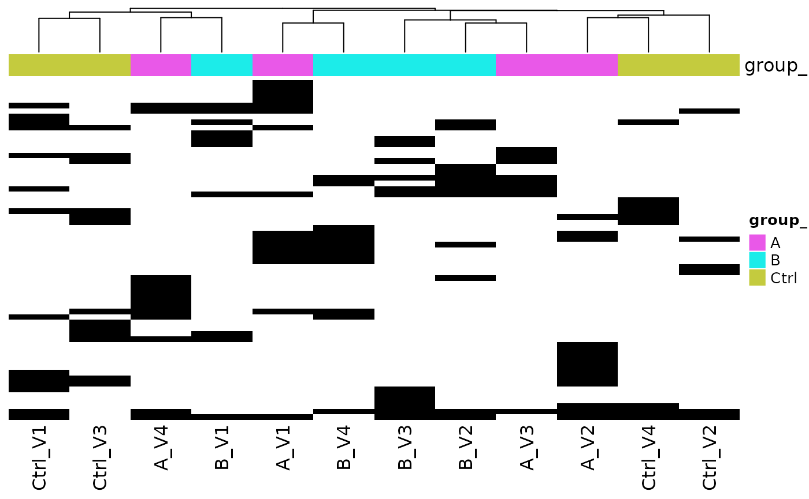
Heatmap where missing proteins (zero in case of MaxQuant reported intensities), black - missing protein intensities, white - present
lfqdata$get_Summariser()$plot_missingness_per_group()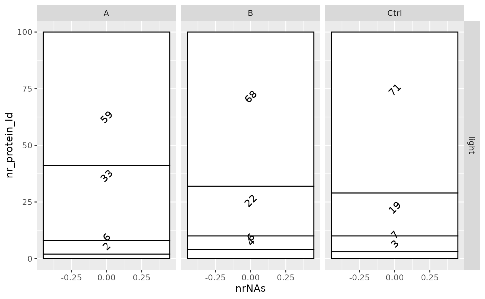
# of proteins with 0,1,…N missing values
lfqplotter$missigness_histogram()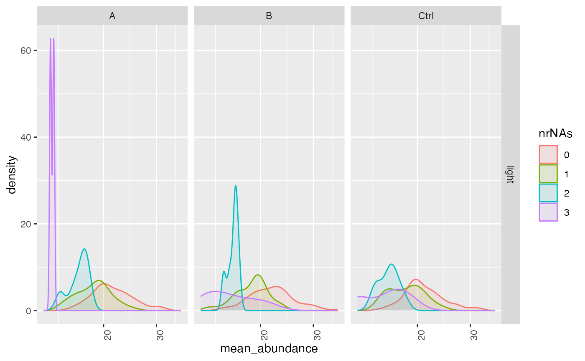
Intensity distribution of proteins depending on # of missing values
Computing standard deviations, mean and CV.
Other important statistics such as coefficient of variation, means
and standard deviations can be easily calculated using the
get_Stats function and visualized with a violin plot.
stats <- lfqdata$get_Stats()
stats$violin()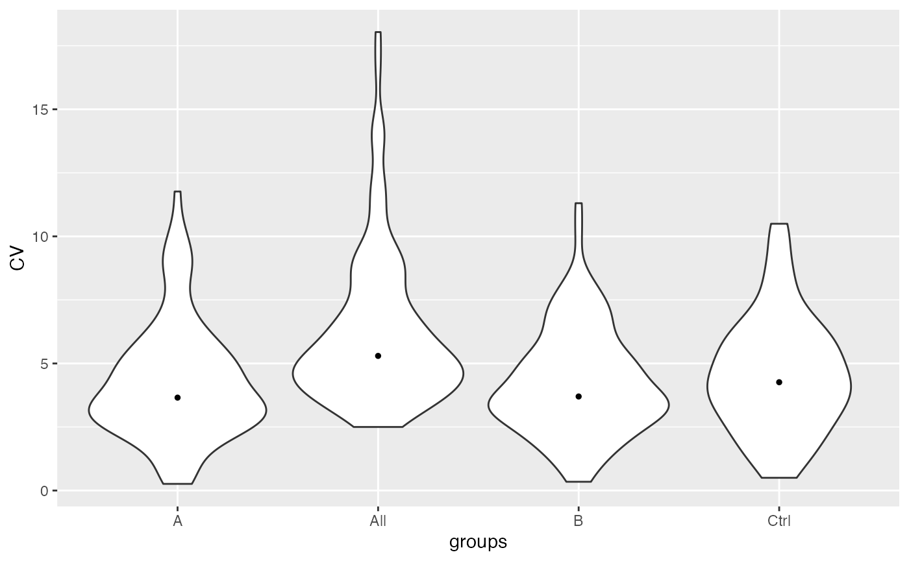
Violin plots of CVs in the different groups and among all groups
prolfqua::table_facade( stats$stats_quantiles()$wide, paste0("quantile of ",stats$stat ))| probs | A | B | Ctrl | All |
|---|---|---|---|---|
| 0.10 | 2.014611 | 1.993591 | 1.762209 | 3.451035 |
| 0.25 | 2.711702 | 2.956419 | 2.882970 | 4.370724 |
| 0.50 | 3.655067 | 3.700140 | 4.261204 | 5.296948 |
| 0.75 | 5.338899 | 5.462486 | 5.904953 | 7.411380 |
| 0.90 | 7.541564 | 7.118907 | 7.471854 | 9.912513 |
stats$density_median()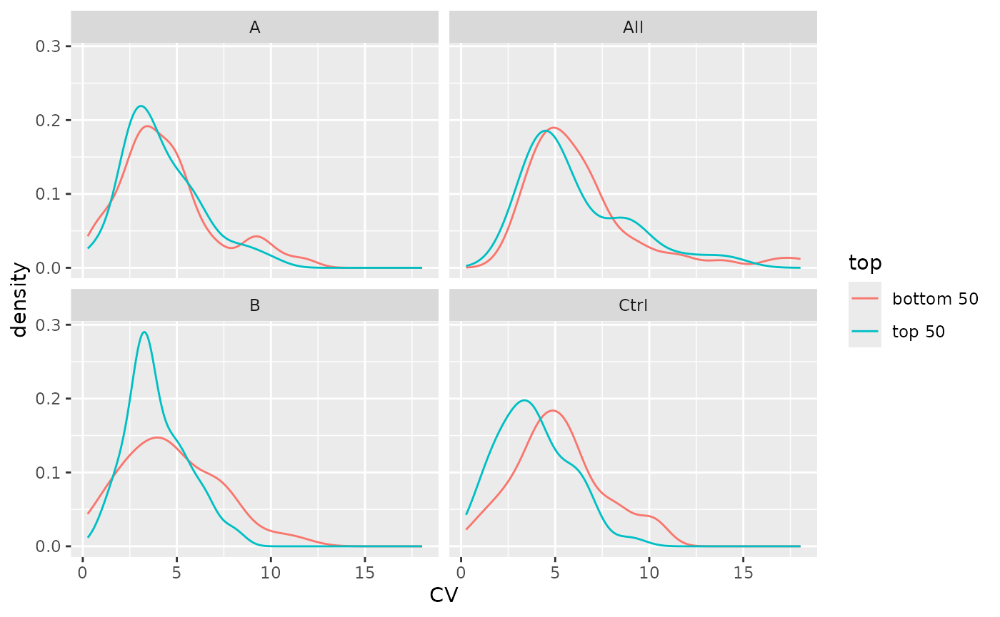
Distribution of CV’s for top 50% and bottom 50% proteins by intensity.
Normalize protein intensities and show diagnostic plots
We normalize the data by transforming and then .
lt <- lfqdata$get_Transformer()
transformed <- lt$log2()$robscale()$lfq
transformed$config$is_response_transformed## [1] TRUE
pl <- transformed$get_Plotter()
density_norm <- pl$intensity_distribution_density()
gridExtra::grid.arrange(density_nn, density_norm)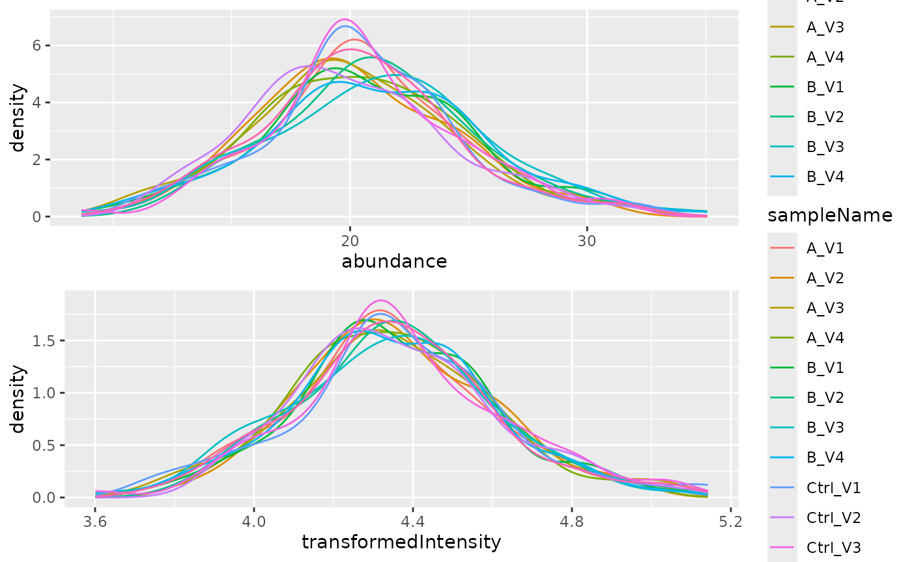
Distribution of intensities before and after normalization.
pl$pairs_smooth()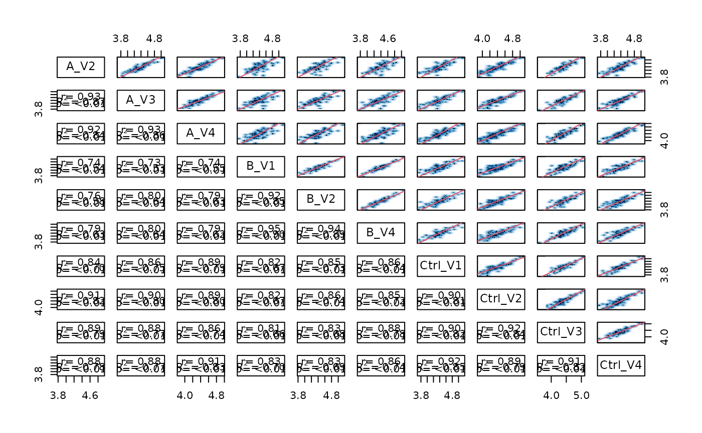
Scatterplot matrix
## NULL
p <- pl$heatmap_cor()
p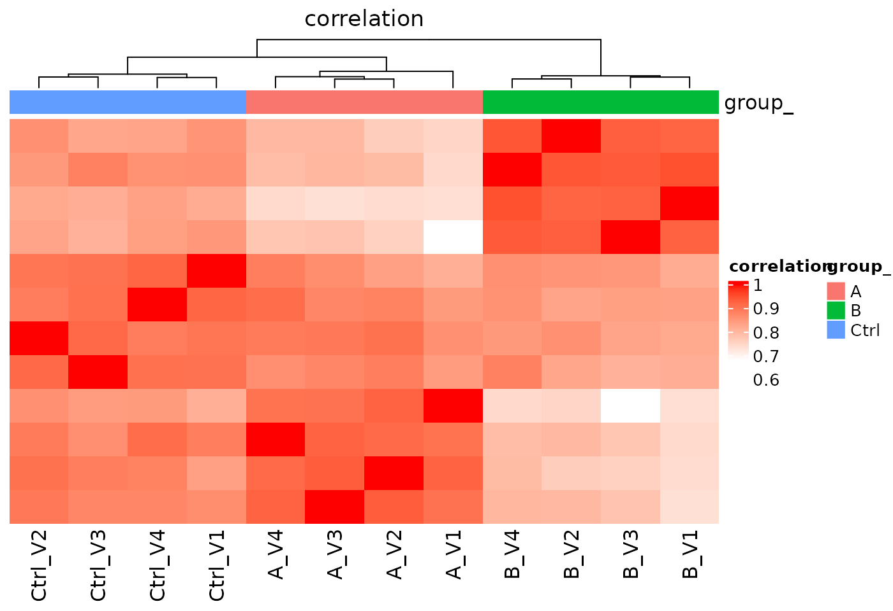
Heatmap, Rows - proteins, Columns - samples
Fitting a linear model
For fitting linear models to the transformed intensities for all our proteins we have to first specify the model function and define the contrasts that we want to calculate.
transformed$factors()## # A tibble: 12 × 3
## sample sampleName group_
## <chr> <chr> <chr>
## 1 A_V1 A_V1 A
## 2 A_V2 A_V2 A
## 3 A_V3 A_V3 A
## 4 A_V4 A_V4 A
## 5 B_V1 B_V1 B
## 6 B_V2 B_V2 B
## 7 B_V3 B_V3 B
## 8 B_V4 B_V4 B
## 9 Ctrl_V1 Ctrl_V1 Ctrl
## 10 Ctrl_V2 Ctrl_V2 Ctrl
## 11 Ctrl_V3 Ctrl_V3 Ctrl
## 12 Ctrl_V4 Ctrl_V4 Ctrl
formula_Condition <- strategy_lm("transformedIntensity ~ group_")
# specify model definition
modelName <- "Model"
contr_spec <- c("AvsC" = "group_A - group_Ctrl",
"BvsC" = "group_B - group_Ctrl")Here we have to build the model for each protein.
mod <- prolfqua::build_model(
transformed$data,
formula_Condition,
subject_Id = transformed$config$hierarchy_keys() )In this plot we can see what factors in our model are mostly responsible for the adjusted p-values calculated from an analysis of variance.
mod$anova_histogram("FDR")## $plot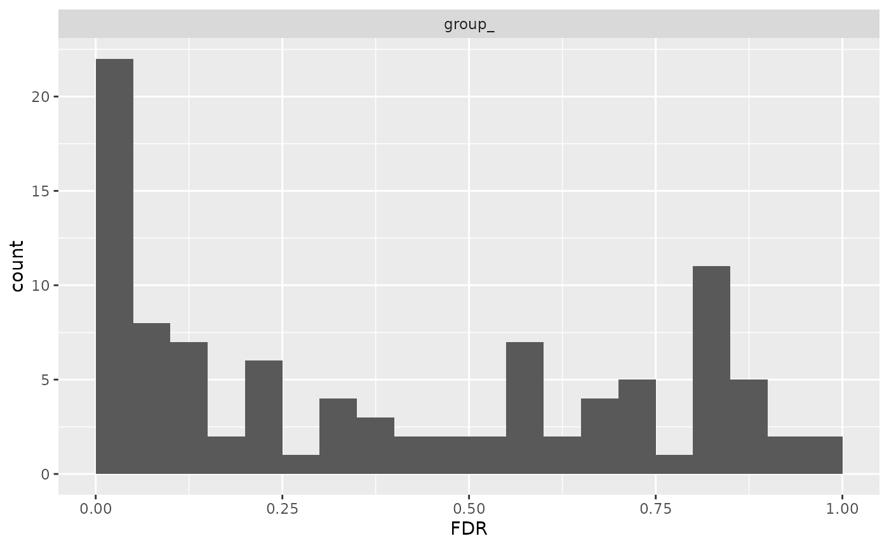
Distribtuion of adjusted p-values (FDR)
##
## $name
## [1] "Anova_p.values_Model.pdf"One also look what proteins do show different abundances in any of our five dilutions by looking at the FDR values of the analysis of variane.
aovtable <- mod$get_anova()
head(aovtable)## # A tibble: 6 × 10
## protein_Id factor Df Sum.Sq Mean.Sq F.value p.value isSingular nr_coef
## <chr> <chr> <int> <dbl> <dbl> <dbl> <dbl> <lgl> <int>
## 1 0EfVhX~3967 group_ 2 0.0626 0.0313 5.18 0.0416 FALSE 3
## 2 0m5WN4~6025 group_ 2 0.324 0.162 29.4 0.000205 FALSE 3
## 3 0YSKpy~2865 group_ 2 0.00753 0.00376 0.605 0.569 FALSE 3
## 4 3QLHfm~8938 group_ 2 0.0637 0.0319 13.2 0.00213 FALSE 3
## 5 3QYop0~7543 group_ 2 0.00121 0.000603 0.178 0.840 FALSE 3
## 6 76k03k~7094 group_ 2 0.0264 0.0132 3.06 0.0968 FALSE 3
## # ℹ 1 more variable: FDR <dbl>
dim(aovtable)## [1] 98 10
xx <- aovtable |> dplyr::filter(FDR < 0.2)
signif <- transformed$get_copy()
signif$data <- signif$data |> dplyr::filter(protein_Id %in% xx$protein_Id)
hmSig <- signif$get_Plotter()$heatmap()
hmSig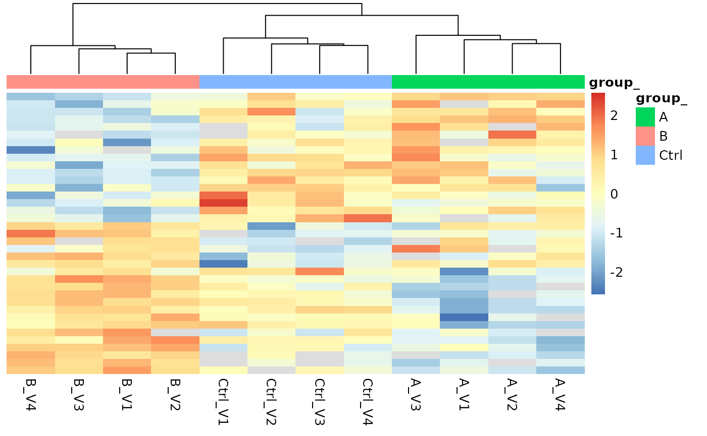
Heatmap for proteins with FDR < 0.2 in the analysis of variance
Compute contrasts
Next we do calculate the statistics for our defined contrasts for all
the proteins. For this we can use the Contrasts
function.
contr <- prolfqua::Contrasts$new(mod, contr_spec)
v1 <- contr$get_Plotter()$volcano()Alternatively, we can moderate the variance and using the
Experimental Bayes method implemented in
ContrastsModerated.
contr <- prolfqua::ContrastsModerated$new(contr)
contrdf <- contr$get_contrasts()In the next figure it can be seen WEWinputNEEDED.
plotter <- contr$get_Plotter()
v2 <- plotter$volcano()
gridExtra::grid.arrange(v1$FDR,v2$FDR, ncol = 1)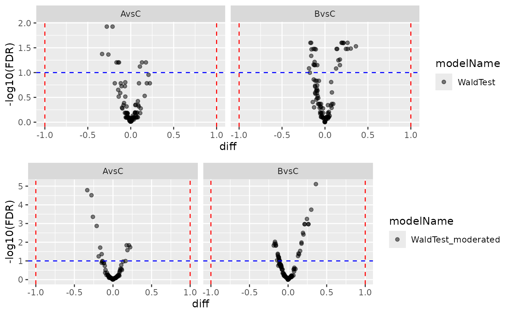
Volcano plot, Left panel - no moderation, Right panel - with moderation.
plotter$ma_plotly()MA plot showing the dependency of mean abuncance with respect to the difference
#myProteinIDS <- c("sp|Q12246|LCB4_YEAST", "sp|P38929|ATC2_YEAST", "sp|Q99207|NOP14_YEAST")
myProteinIDS <- c("sp|P0AC33|FUMA_ECOLI", "sp|P28635|METQ_ECOLI", "sp|Q14C86|GAPD1_HUMAN")
dplyr::filter(contrdf, protein_Id %in% myProteinIDS)## # A tibble: 0 × 13
## # ℹ 13 variables: modelName <chr>, protein_Id <chr>, contrast <chr>,
## # diff <dbl>, std.error <dbl>, avgAbd <dbl>, statistic <dbl>, df <dbl>,
## # p.value <dbl>, conf.low <dbl>, conf.high <dbl>, sigma <dbl>, FDR <dbl>Contrasts with missing value imputation
Use this method if there proteins with no observations in one of the
groups. With the ContrastsMissing function, we can estimate
difference in mean for proteins that are not observed in one group or
condition. For this we are using the average expression at percentile
0.05 of the group where the protein is not quantified.
mC <- prolfqua::ContrastsMissing$new(lfqdata = transformed, contrasts = contr_spec)
colnames(mC$get_contrasts())## [1] "modelName" "protein_Id"
## [3] "meanAbundanceImp_group_1" "meanAbundanceImp_group_2"
## [5] "diff" "group_1_name"
## [7] "group_2_name" "contrast"
## [9] "avgAbd" "indic"
## [11] "nrMeasured_group_1" "nrMeasured_group_2"
## [13] "df" "sigma"
## [15] "std.error" "statistic"
## [17] "p.value" "conf.low"
## [19] "conf.high" "FDR"Finally we are merging the results and give priority to the results where we do not have missing values in one group.
merged <- prolfqua::merge_contrasts_results(prefer = contr,add = mC)$merged
plotter <- merged$get_Plotter()
tmp <- plotter$volcano()
tmp$FDR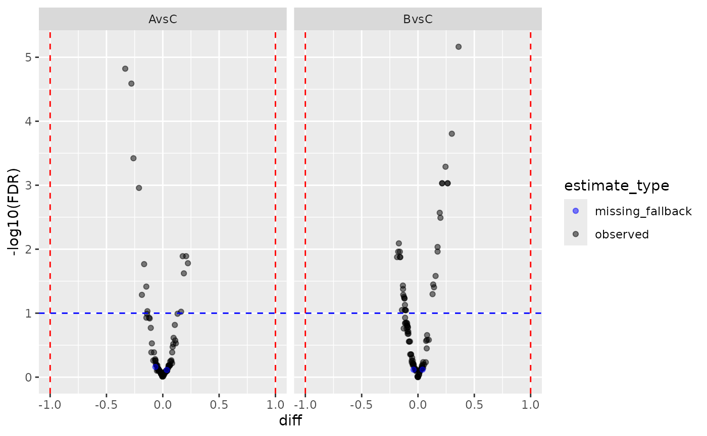
Volcano plots for the two contrasts with missing value imputation from the group_average model.
Look at proteins which could not be fitted using the linear model, if any.
merged <- prolfqua::merge_contrasts_results(prefer = contr,add = mC)
moreProt <- transformed$get_copy()
moreProt$data <- moreProt$data |> dplyr::filter(protein_Id %in% merged$more$contrast_result$protein_Id)
moreProt$get_Plotter()$raster()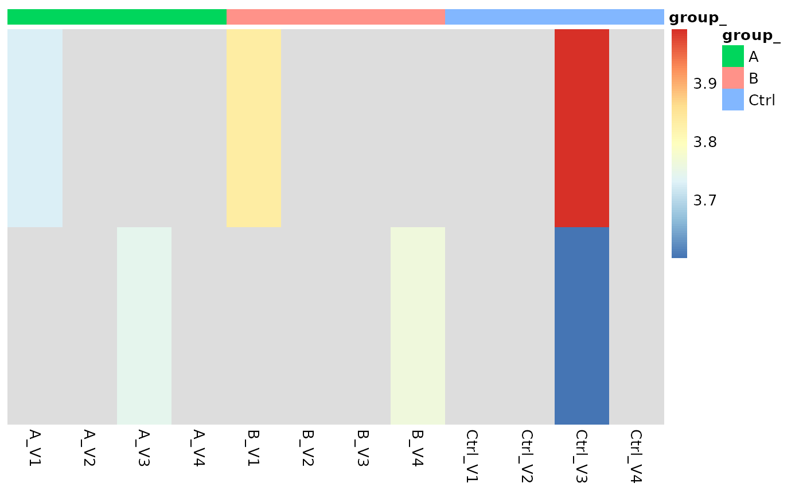
# here we do not get anything because there is nothing imputed!Gene Set Enrichment Analysis (GSEA)
After computing contrasts, proteins can be ranked by log2 fold change or t-statistic and subjected to gene set enrichment analysis. The typical workflow is:
- Extract UniProt IDs from the contrast results using
prolfqua::get_UniprotID_from_fasta_header() - Map UniProt IDs to Entrez Gene IDs using
AnnotationDbi::mapIds()with a species-specific annotation package - Create a named ranked list (statistic values named by gene IDs)
- Run GSEA using
clusterProfiler::gseGO()orclusterProfiler::gseKEGG()
For details see:
- clusterProfiler book – comprehensive guide to enrichment analysis in R
- clusterProfiler Bioconductor page
- AnnotationDbi – for mapping between gene identifier types
The prolfqua package is described in (Wolski et al. 2022).
Session Info
## R version 4.5.2 (2025-10-31)
## Platform: x86_64-pc-linux-gnu
## Running under: Ubuntu 24.04.4 LTS
##
## Matrix products: default
## BLAS: /usr/lib/x86_64-linux-gnu/openblas-pthread/libblas.so.3
## LAPACK: /usr/lib/x86_64-linux-gnu/openblas-pthread/libopenblasp-r0.3.26.so; LAPACK version 3.12.0
##
## locale:
## [1] LC_CTYPE=C.UTF-8 LC_NUMERIC=C LC_TIME=C.UTF-8
## [4] LC_COLLATE=C.UTF-8 LC_MONETARY=C.UTF-8 LC_MESSAGES=C.UTF-8
## [7] LC_PAPER=C.UTF-8 LC_NAME=C LC_ADDRESS=C
## [10] LC_TELEPHONE=C LC_MEASUREMENT=C.UTF-8 LC_IDENTIFICATION=C
##
## time zone: UTC
## tzcode source: system (glibc)
##
## attached base packages:
## [1] stats graphics grDevices utils datasets methods base
##
## other attached packages:
## [1] prolfqua_1.6.1 dplyr_1.2.0
##
## loaded via a namespace (and not attached):
## [1] tidyselect_1.2.1 viridisLite_0.4.3 farver_2.1.2
## [4] S7_0.2.1 fastmap_1.2.0 lazyeval_0.2.2
## [7] promises_1.5.0 digest_0.6.39 rpart_4.1.24
## [10] mime_0.13 lifecycle_1.0.5 survival_3.8-3
## [13] statmod_1.5.1 magrittr_2.0.4 compiler_4.5.2
## [16] progress_1.2.3 rlang_1.1.7 sass_0.4.10
## [19] tools_4.5.2 utf8_1.2.6 yaml_2.3.12
## [22] data.table_1.18.2.1 knitr_1.51 prettyunits_1.2.0
## [25] labeling_0.4.3 htmlwidgets_1.6.4 plyr_1.8.9
## [28] RColorBrewer_1.1-3 KernSmooth_2.23-26 withr_3.0.2
## [31] purrr_1.2.1 desc_1.4.3 nnet_7.3-20
## [34] grid_4.5.2 jomo_2.7-6 xtable_1.8-8
## [37] mice_3.19.0 ggplot2_4.0.2 scales_1.4.0
## [40] iterators_1.0.14 MASS_7.3-65 cli_3.6.5
## [43] crayon_1.5.3 UpSetR_1.4.0 rmarkdown_2.31
## [46] ragg_1.5.2 reformulas_0.4.4 generics_0.1.4
## [49] otel_0.2.0 httr_1.4.8 minqa_1.2.8
## [52] cachem_1.1.0 operator.tools_1.6.3.1 splines_4.5.2
## [55] vctrs_0.7.2 boot_1.3-32 glmnet_4.1-10
## [58] Matrix_1.7-4 jsonlite_2.0.0 hms_1.1.4
## [61] mitml_0.4-5 ggrepel_0.9.8 crosstalk_1.2.2
## [64] systemfonts_1.3.2 foreach_1.5.2 limma_3.66.0
## [67] plotly_4.12.0 tidyr_1.3.2 jquerylib_0.1.4
## [70] glue_1.8.0 pkgdown_2.2.0 nloptr_2.2.1
## [73] pan_1.9 codetools_0.2-20 stringi_1.8.7
## [76] shape_1.4.6.1 gtable_0.3.6 later_1.4.8
## [79] lme4_2.0-1 tibble_3.3.1 pillar_1.11.1
## [82] htmltools_0.5.9 R6_2.6.1 textshaping_1.0.5
## [85] Rdpack_2.6.6 formula.tools_1.7.1 shiny_1.13.0
## [88] evaluate_1.0.5 lattice_0.22-7 rbibutils_2.4.1
## [91] backports_1.5.0 pheatmap_1.0.13 broom_1.0.12
## [94] httpuv_1.6.17 bslib_0.10.0 Rcpp_1.1.1
## [97] gridExtra_2.3 nlme_3.1-168 mgcv_1.9-3
## [100] logistf_1.26.1 xfun_0.57 fs_2.0.1
## [103] forcats_1.0.1 pkgconfig_2.0.3